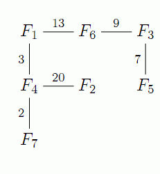

农夫约翰有N(2≤N≤40000)个农场，标号1到N,M(2≤M≤40000)条的不同的垂直或水
平的道路连结着农场，道路的长度不超过1000.这些农场的分布就像下面的地图一样，

图中农场用F1..F7表示, 每个农场最多能在东西南北四个方向连结4个不同的农场．此外，农场只处在道路的两端．道路不会交叉且每对农场间有且仅有一条路径．邻居鲍伯要约翰来导航，但约翰丢了农场的地图，他只得从电脑的备份中修复了．每一条道路的信息如下：
从农场23往南经距离10到达农场17
从农场1往东经距离7到达农场17
当约翰重新获得这些数据时，他有时被的鲍伯的问题打断：“农场1到农场23的曼哈顿距离是多少？”所谓在(XI，Yi)和(X2，y2)之间的“曼哈顿距离”，就是lxl - X21+lyl - y21．如果已经有足够的信息，约翰就会回答这样的问题（在上例中答案是17），否则他会诚恳地抱歉并回答-1.